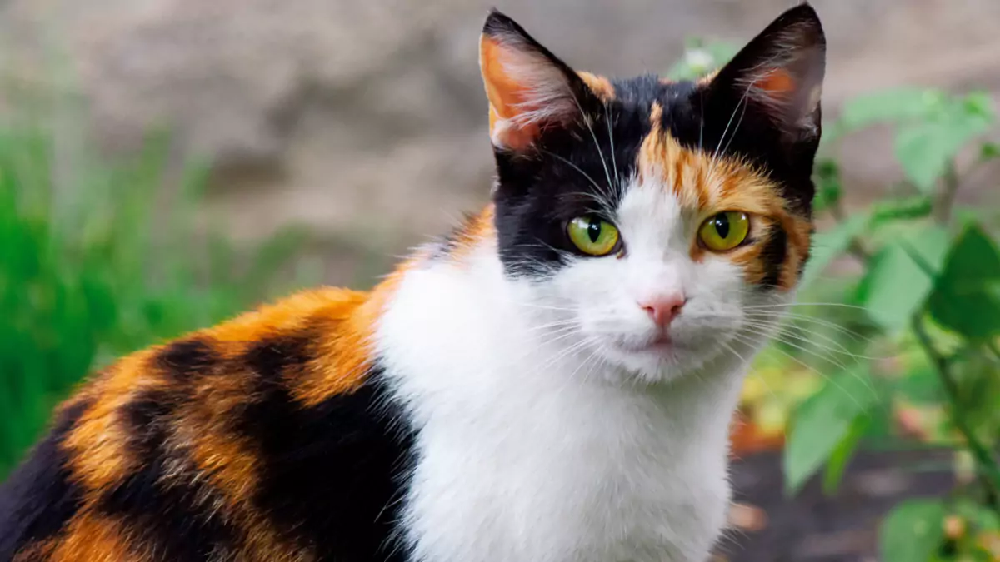

Simba
Espécie: Gato
Tamanho: M
Idade: 3 anos
Sexo: Macho
Estado de saúde: Muito bom
Descrição: Simba é um gato extremamente amigável, ideal para famílias com crianças. Ele adora companhia e é muito tranquilo, se adaptando facilmente a qualquer ambiente.
Adotar Simba